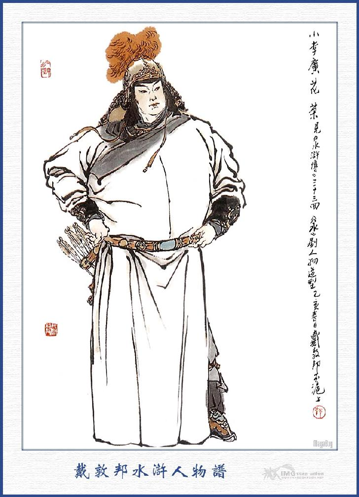
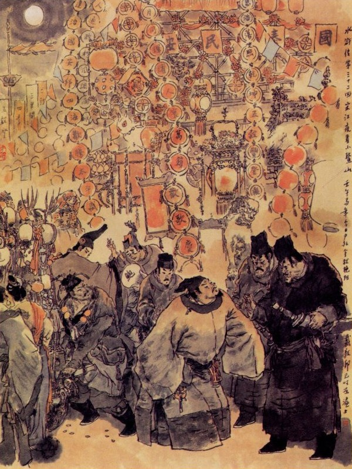
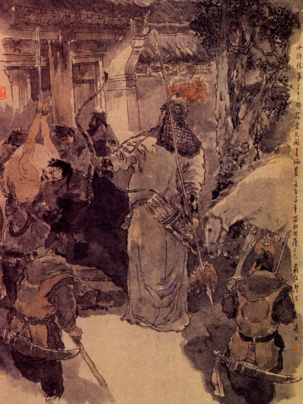
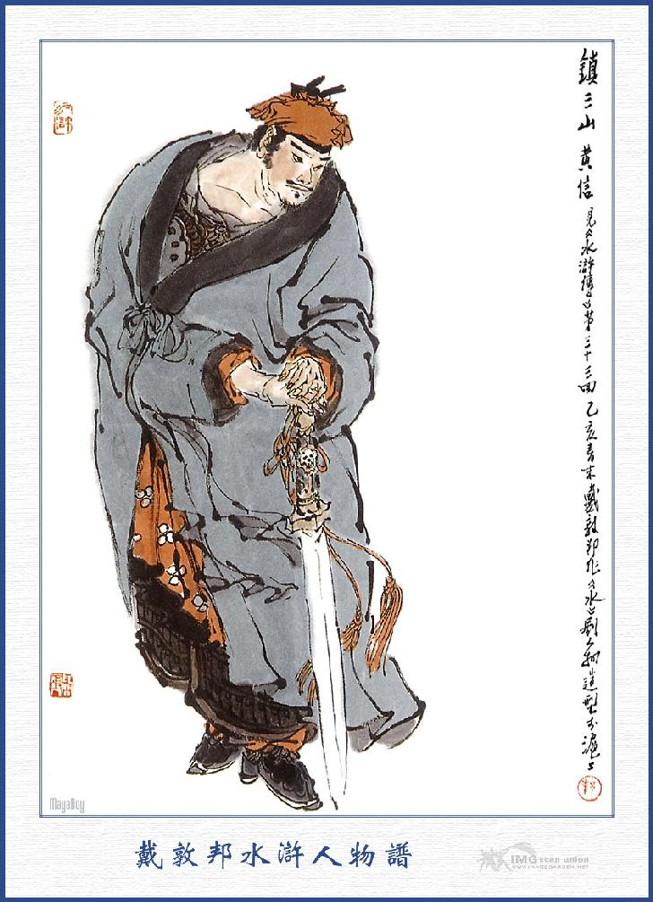

Thanh Phong ở ngay vào giữa quãng ngã ba đất Thanh Châu. Chỗ ấy tên là Thanh Phong trấn đường thông ba mặt, núi non giặc cướp rất nhiều, nhân thế mới đặt trại Thanh Phong để trông coi địa hạt. Quanh trại đó có tới bốn năm ngàn nhà ở, dân sự làm ăn kể cũng có điều sầm uất. Giữa trần có chợ to phố lớn, bên nam có một trại nhỏ của quan võ Hoa Vinh đóng đó. Hôm ấy một mình Tống Giang đi tới trấn Thanh Phong, hỏi thăm đến cửa trại Hoa Vinh, nói với quân lính canh cổng để vào báo trước. Một lát, có một vị quân quan trẻ tuổi chạy ra đón chào Tống Giang rồi thét lính đỡ lấy khăn gói và đao mà mời Tống Giang vào ngồi ở chính sảnh. Đoạn rồi cúi đầu lạy bốn lạy mà nói rằng:
- Từ khi bái biệt Huynh trưởng tới nay thấm thoát đã năm sáu năm trời, trong lòng rất là khát vọng. Dạo trước Huynh trưởng giết một đứa yên hoa rồi bị quan quân truy tầm định bắt. Tiểu đệ nghe nói như ngồi phải chông gai, đã viết luôn mười mấy phong thư, gửi sang gia trang để mời đón mà không thấy Huynh trưởng tới chơi. Nay bỗng đâu được gặp Huynh trưởng ở đây, thực là thoả lòng vô hạn.
Nói xong lại cúi đầu xuống lạy, Tống Giang vội vàng đỡ dậy mời ngồi nói chuyện. Hoa Vinh khiêm tốn ngồi chếch về một bên rồi Tống Giang đem chuyện mình thuật hết đầu đuôi cho Hoa Vinh. Hoa Vinh nghe nói có ý cảm động mà rằng:
- Té ra thời vận nhân huynh chuân kiển quá chừng, ngày nay tới đây, xin nhân huynh hãy ở tạm vài năm rồi sau đây sẽ liệu đường xuất xử.
Nói đoạn mời Tống Giang vào ngồi chơi ở nhà trong rồi gọi vợ là Thôi Thị và em gái ra lạy mừng. Nhất diện sai lấy áo xiêm khăn giầy cho Tống Giang tắm rửa thay giặt rồi mới mời vào uống rượu. Trong khi uống rượu Tống Giang đem chuyện cứu phu nhân của Lưu Tri Trại thuật cho Hoa Vinh nghe.

HOA VINH
Hoa Vinh chau đôi mày mà bảo Tống Giang rằng:
- Huynh trưởng cứu người ấy làm gì" Chúng tôi đang muốn làm cho nó chừa bớt cái mồm điêu hoạt thì mới hả lòng.
Tống Giang ngạc nhiên hỏi rằng:
- Quái lạ! Tôi thấy nói là vợ quan Tri Trại ở trại Thanh Phong nên tôi nghĩ đến tình đồng liêu của hiền đệ mà hết sức ngăn trở Vương Nụy Hổ để cứu cho thoát nạn, vậy chẳng hay là cớ sao mà hiền đệ lại nói như thế?
- Nguyên Huynh trưởng không biết: Trại Thanh Phong đây nếu để cho một mình tôi coi giữ thì cường đạo xa gần có đâu dám sinh lòng quấy nhiễu, ai ngờ mới đây có anh khốn nạn ấy đến làm Tri Trại ở chốn này, tiếng gọi là văn quan mà một chữ không biết, chỉ chăm chăm lừa dối đám dân gian mà pháp luật triều đình không còn chút gì là được. Tiểu đệ tuy là một chức võ quan, song vẫn bị hắn ta chọc tức luôn luôn không thể nào giết ngay đi được cho nó thoả lòng. Huynh trưởng còn cứu làm chi cho uổng sức. Vả chăng con mụ ấy lại là một đứa bất lương chỉ phỉnh phờ ông chồng để làm càn làm bậy hãm hại lương dân mà ăn tiền đút lót. Những người khốn nạn như thế, giết đi còn chưa đáng tội lỗi hơi đâu cứu vớt thêm phiền.
Tống Giang khuyên Hoa Vinh rằng:
- Hiền đệ chớ nên nghĩ thế! Xưa nay thường nói "Không nên buộc chết cho người", vả chi lại là đồng liêu với hiền đệ, dẫu có điều không phải cũng nên che đậy cho người; thế mới là phải đạo.
Hoa Vinh hối ngộ mà rằng:
- Huynh trưởng dạy thế rất là phải lắm. Để ngày mai tôi có vào việc quan gì đó, sẽ nói chuyện Huynh trưởng cứu vợ con hắn cho hắn biết.
Tống Giang gật đầu khen rằng:
- Nếu vậy thì càng rõ cái hay của hiền đệ ra, tự nhiên là thiên hạ phải phục.
Từ đó hai vợ chồng Hoa Vinh khoản đãi Tống Giang càng ngày càng trân trọng và dọn dẹp một gian phòng ở nhà trong, để lưu Tống Giang ở đó. Cách bốn năm hôm, Hoa Vinh sai đầy tớ riêng dắt một ít tiền, để đưa Tống Giang đi chơi xem phong cảnh trong trấn. Tống Giang đi xem, thấy chợ búa huyên hòa, phố phường rộn rịp, nào nơi quán thấp, nào chốn lầu cao, miếu mạo chùa chiền, phong cảnh sầm uất. Mỗi ngày Hoa Vinh lại cắt một người cho đem tiền đi hầu Tống Giang, song mỗi khi vào hàng quán rượu chè thì Tống Giang lại bỏ tiền ra chi dụng, còn tiền của Hoa Vinh thì để mặc cho người nhà được hưởng. Bởi thế Tống Giang ở đó chưa được bao lâu mà bọn người cửa người nhà không ai là không có lòng kính mến. Ngày tháng thoi đưa, sớm chiều lần lữa, Tống Giang ở trại Thanh Phong được hơn một tháng trời mà chốc đã đông tàn xuân đến, phong quang khác hẳn mười phần. Bấy giờ đến Tết Nguyên Tiêu, các dân cư ở trấn Thanh Phong thu góp tiền nong, kết trên giăng giấy kết hoa, treo năm bẩy trăm ngọn đèn hoa rất là rực rỡ; còn ở trong miếu thổ thần, cùng các nơi phố sá đều treo đèn hết thảy, dẫu không ví được với kinh sư là nơi đô hội song cũng chẳng khác chi một thành bất dạ vậy.
Buổi sáng hôm ấy Hoa Vinh tiếp rượu Tống Giang ở trong trại, mãi đến gần trưa mới xin phép đứng dậy, kiểm điểm mấy trăm tên lính, sai đi đàn áp nơi phố sá mà canh giữ bốn bên cửa trại cho nghiêm. Vào khoảng xế chiều Hoa Vinh trở về trại, nói với Tống Giang rằng:
- Lẽ ra đêm nay tiểu đệ xin đi hầu Huynh trưởng, để xem phong cảnh nguyên tiêu là phải, song ngặt vì tiểu đệ phải trông coi quân lính, không thể nào dứt ra đi được. Vậy đến tối xin cho mấy tên người nhà, dẫn hiền huynh đi du ngoạn mọi nơi, tiểu đệ xin đợi ở nhà để khi về đây, ta cùng uống rượu cho vui.

Nói xong sai dọn các thức điểm tâm lên cho hai người cùng ăn uống. Tối hôm ấy khí trời ấm áp, lờ mờ có bóng trăng xuống, Tống Giang cùng ba bốn tên người nhà Hoa Vinh dạo bước xem hội thi đèn. Khi ra tới phố, thấy nhà nào nhà ấy, đèn thắp từng hàng, hoa treo suốt lượt, nào đèn vẽ lối cổ tích, đèn lối Bách mẫu đơn hoa, đèn lối hoa sen, đèn kiểu hoa phù dung. không một kiểu gì không có. Bốn năm người đi lững thững đến trước cửa miếu Thổ Thần, xem phong cảnh Ngao Sơn một lúc rồi lại dắt nhau quay đi. Mấy người đi về phía bên nam được chừng năm bảy trăm thước thì thấy phía trước mặt đèn đóm tưng bừng, có một đoàn người đang đứng quanh vùng đó, một nơi tường viện lớn mà tiếng nổi thanh la, cùng tiếng giọng họ reo ầm ĩ vang tai. Tống Giang thấy vậy, vội vàng đến để xem, ai ngờ người lùn khó xem, lại phải đứng sau tụi người đám đông, nên không sao xem rõ được, sau tụi người nhà phải đạp đám người đông, để cho Tống Giang len vào tận nơi, để xem cho rõ. Khi vào tới nơi, thấy một tụi con nhà nghề, đương nhảy múa rồi rút lên ở đó Tống Giang thấy lão nhà nghề nhảy múa uốn éo nhiều lối buồn cười thì vỗ tay mà cười to lên mấy tiếng. Bấy giờ vợ chồng Lưu Cao đương ngồi xem ở bên trên. Người vợ thấy tiếng cười hơi quen tai, liền ngẩng cổ nom, thấy Tống Giang đứng đó thì vội vàng trỏ mặt mà bảo chồng rằng:
- Kìa thằng lùn đen kia, chính là thằng đầu sỏ đám giặc, nó bắt thiếp ở núi Thanh Phong dạo trước đó.
Lưu Tri Trại ngạc nhiên kinh sợ liền gọi sáu bảy tên đầy tớ thân mà quát lên rằng:
- Bắt thằng giặc lùn đen kia cho ta.
Tống Giang ngẩng đầu trông lên, nghe tiếng quát bắt lại thì chợt trông thấy vợ chồng Lưu Cao ở đó, bèn vội vàng co cẳng chạy luôn. Bất đồ chạy được mươi nhà thì bọn kia đã đuổi kịp đến sau, liền bắt Tống Giang trói lại mà dong về trong trại. Mấy anh người nhà Hoa Vinh đi hầu Tống Giang, thấy vậy thì chạy về báo cáo cho Hoa Vinh biết. Bấy giờ Lưu Cao về trại, thét giải Tống Giang lên mà thét mắng rằng:
- Quân kia mày là giặc cướp ở núi Thanh Phong ai cho phép bây dám cả gan đến đây xem đèn xem hội?
Tống Giang kêu rằng:
- Chúng tôi là Trương Tam ở huyện Vận Thành, bạn thân với Hoa Tri Trại, mới đến chơi mấy hôm nay ở đây làm gì biết núi Thanh Phong, sao mà ngài dạy thế?
Con vợ Lưu Cao ở phía sau bình phong nghe thấy vậy, liền chạy ra mà nói lên rằng:
- Đồ ăn cướp kia, lại còn cãi à? Mầy có nhớ khi ta gọi mày là Đại Vương không?
Tống Giang đáp rằng:
- Cung nhân lầm rồi, bấy giờ tôi nói với cung nhân rằng: Tôi đây cũng là khách ở Vận Thành bị bắt đến đây, nào phải Đại Vương đâu?
Lưu Tri Trại nói:
- Mầy bảo rằng mày là thằng bị cướp đến đó. sao mày nay lại ở đây xem đèn được?
Con mụ kia lại tiếp luôn rằng:
- Chính mày ngồi ghế giữa ở sơn trại, ta kêu là đại vương mãi nào mày có nói gì đâu?
Tống Giang thở dài mà rằng:
- Cung nhân không nhớ gì đến công tôi cứu đỡ cho cung nhân được thoát nạn gian dâm, nay còn đổ vạ cho tôi là ăn cướp thì còn trời đất nào nữa.
Chị chàng kia nghe nói, cả giận mà quát lên rằng:
- Quân rắn đầu rắn mặt ấy, không đánh cho nó một mẻ thì sao nó chịu nhận.
Lưu Cao khen là phải, liền thét lính lấy roi lên vật đánh Tống Giang vọt bắn máu tươi rồi khóa xích hai chân tay, đợi sáng hôm sau làm xe tù để giải lên châu.
Bên kia Hoa Vinh nghe thấy lũ người nhà về báo thì giật mình kinh ngạc, liền viết phong thư, sai người thân mật sang nói với Lưu Cao, để cứu cho Tống Giang. Khi người nhà đưa thư sang đến văn trại, Lưu Cao cho gọi vào sảnh sự, cất lấy thư bóc ra xem thấy trong thư viết đại khái như sau này:
- "Hoa Vinh bái thượng Lưu Cao tướng công. Nhân tôi có người bà con thân tên Lưu Văn mới ở Tế Châu đến đây. Hôm qua vì đi xem hội đèn, lỡ có xúc phạm tôn uy thì xin ngài nghĩ tình tha thứ đi cho tôi sẽ xin đến cảm tạ. Mấy lời thô thiển, lượng cả xét soi"
Lưu Cao xem xong nổi giận đùng đùng, xé nát phong thư mà mắng rằng:
- Anh Hoa Vinh này vô lễ quá! Hẳn là quan tước triều đình sao dám thông đồng với giặc mà bưng bít mắt ta? Thằng giặc này, nó đã khai là tên Trương Tam, ở Vận Thành, thế mà Hoa Vinh dám viết giấy đến đây nói là Lưu Văn ở Tế Châu? Hắn tưởng rằng nói họ Lưu thì mình nghĩ tình cùng họ mà tha cho nó chăng. Có khi nào ta đây lại khờ dại đến thế? Tả hữu đâu! Đem thằng người nhà này đuổi cổ nó ra.
Tên người nhà bị đuổi ra, vừa căm tức, vội chạy về báo cho Hoa Vinh biết. Hoa Vinh nghe nói, càng lấy làm nóng lòng sốt ruột, liền sai người nhà đóng ngựa rồi mặc giáp, đeo cung, cầm đao, dẫn mấy mươi tên binh lính giáo gậy mà thẳng xông sang trại Lưu Cao. Bấy giờ đám lính canh cổng bên trại Lưu Cao trông thấy Hoa Vinh đến thì anh nào cũng sợ mất mật mà chạy tán đi các ngả. Hoa Vinh đi vào đến trong sảnh, liền xuống ngựa, cầm giáo ra tay rồi dàn mấy tên quân ra trước cửa sảnh kêu to lên rằng:
- Mời Lưu Tri Trại ra đây nói chuyện.

Lưu Tri Trại nghe tiếng Hoa Vinh thì sợ mất hồn mất vía, nấp chui vào một chỗ mà không dám thò ra. Hoa Vinh đứng đợi hồi lâu, không thấy Lưu Cao ra, liền hô quân lính đi ra thẳng đằng sau, để cứu người bị bắt. Ba bốn mươi tên lính, vâng lệnh đổ ùa đi tìm, đến một gian phòng ở dưới trại, thấy Tống Giang bị trói treo lên xà nhà, xích sắt xích cả chân tay mà thịt da sứt ra từng chỗ, tụi quân lính túm lại cởi nâng Tống Giang xuống, tháo bỏ xích sắt rồi cùng nhau vực ra ngoài cửa sảnh. Hoa Vinh trông thấy rất là thổn thức trong lòng bèn sai lính đưa về nhà trước rồi nhảy lên ngựa mà nói to lên rằng:
- Lưu Cao! Ngươi là một ông quan văn Tri Trại ở đây, sao nỡ đãi Hoa Vinh như thế? Nhà ai không có bà con thân thích, ngươi nỡ lòng nào mà bắt biểu huynh ta, đem về nhà mà vu rằng trộm cướp cho đành? Để nay mai ta sẽ nói chuyện với ngươi.
Nói đoạn dẫn chúng về trại, để trông nom phục thị Tống Giang.
Máu nóng đã chan lò chí khí
Gan già chi ngại lúc gian truân!
Biết chăng hỡi khách hồng quần,
Oán kia sao để đền ân cho đành?
Bấy giờ Lưu Cao thấy Hoa Vinh cứu người đem đi rồi, liền âm ọe ra công đường, điểm lấy hai trăm người sang trại Hoa Vinh để cướp lại.
Bọn hai trăm quân lính đó, có hai người làm giáo đầu, một người võ nghệ khá sắc sảo tinh nhanh, song không đọ nổi với Hoa Vinh kia được. Khi chúng được lệnh của Lưu Cao thì trong lòng đã có ý ngần ngại, nhưng mà lệnh trên bắt buộc, không thể từ nan, đành phải chỉnh đốn cung thương mà kéo sang Hoa Trại.
Sáng sớm hôm ấy, chúng kéo nhau sang đến cửa trại, thấy cửa vẫn mở toang không đóng, chúng đều kinh sợ, không anh nào dám cả gan mà sấn đi vào trước. Bấy giờ Hoa Vinh ngồi trong nhà sảnh, thấy chúng đứng đông nghịt cả ngoài cửa, bèn lấy cung tên giơ lên mà quát to bảo chúng rằng:
- Bớ quân sĩ các ngươi, oan có đầu mà nợ thì có chủ. Nay Lưu Cao sai các ngươi đến đây, toan để báo thù cho hắn, song ta e hai viên giáo đầu mới đến, chưa biết võ nghệ của Hoa Vinh, vậy ta hãy bắn mấy mũi tên, cho các anh coi thử. Nếu không sợ thì cứ vào đây mà rửa mặt Lưu Cao. Trông. mũi tên này ta bắn vào cái quả nắm ở đầu thanh phạng của môn thần bên tả đây.
Hoa Vinh nói dứt lời rồi bắn đến tách một cái, chính đúng vào đầu phạng môn thần bên tả. Hai trăm người trông thấy, đều kinh sợ thất thần. Hoa Vinh lại lấy mũi tên thứ hai rồi quát bảo chúng rằng:
- Chúng bây xem mũi tên thứ hai này ta bắn vào cái mào đỏ mũ môn thần bên hữu đây.
Nói đoạn, thấy đánh tạch một tiếng; mũi tên đã cắm vào giữa mào đỏ ở giữa mũ môn thần bên hữu, không trệch đi một ly nào. Bấy giờ hai mũi tên ấy vẫn dán ở trên cánh cửa, Hoa Vinh lại lấy ra một múi tên thứ ba rồi quát lên rằng:
- Bây trông mũi này ta bắn vào giữa bụng tên giáo đầu mặc áo trắng trong đám quân đó.
Viên giáo đầu kia nghe tiếng thì kêu lên rồi ngoắt mình chạy trước còn đám quân lính thì ồ nhau mà té chạy hết cả. Bấy giờ Hoa Vinh sai đóng cửa trại lại rồi trở vào nhà trong nói chuyện với Tống Giang, rằng:
- Việc này thực là lỗi tại tiểu đệ, vì sơ ý một chút, để đến nỗi Huynh trưởng phải chịu những khổ nhục như vậy, xin Huynh trưởng tha trong lỗi cho.
Tống Giang đáp rằng:
- Tôi đây có quản chi những điều ấy, duy Lưu Cao tất còn sinh sự chưa thôi, vậy anh em ta phải nghĩ cách phòng bị thế nào thì mới được.
Hoa Vinh nói:
- Có thế nữa thì tiểu đệ xin liền bỏ chức quan này mà liệu cho nó một mẻ là xong.
Tống Giang thở dài mà rằng:
- Ai ngờ con vợ nó lại nỡ lòng đem oán trả ân, xui chồng đánh bắt làm nhục đến mình như vậy. Tôi đã toan nói rõ tên họ, lại e tiết lộ việc Diêm Bà Tích, nên phải nói dối là Trương Tam ở huyện Vận Thành. Dè đâu Lưu Cao lại đem lòng tàn nhẫn cho tôi là Hổ Trương Tam ở Vận Thành, đến làm giặc ở núi Thanh Sơn và toan đóng xe tù để giải. Nay nếu không có hiền đệ cứu cho thì dẫu lưỡi sắt môi đồng cũng không thể nào biện bạch phân minh ra được.
- Nguyên trước tiểu đệ tưởng anh ta là người biết chữ thì tất nhiên thương người cùng họ. Dè đâu hắn lại xử bạc tình đến thế! Hay cho nhân tình thế cố, lắm nỗi buồn tênh, nghĩ đến bao nhiêu, lại càng thêm căm tức.
Tống Giang cười nhạt mà rằng:
- Hiền đệ còn nói chi hai chữ tình nghĩa ở đời vậy, cho thêm bận lòng, bây giờ hắn đã bị hiền đệ công nhiên đến cướp lấy người về rồi sai đám quân lính đến đây, lại sợ kinh chạy tán thì tất nhiên phải tư giấy đi các nơi, để sinh sự với ta, vậy ta phải liệu trước thế nào mà lánh thân mới được. Tôi định rằng chiều nay tôi phải chạy về núi Thanh Phong, còn hiền đệ ở đây với hắn dù khi có xảy việc thì bất quá cho là đôi bên văn võ bất hòa cũng không khi nào đến tội. Nhược bằng tôi còn vất vưởng ở đây, nhỡ ra bị nó bắt một lần nữa thì khó lòng mà phân thuyết cho ra. Hiền đệ nghĩ sao?
Hoa Vinh nghĩ ngợi hồi lâu rồi đáp rằng:
- Huynh trưởng là bậc cao minh, nghĩ vậy rất là phải lắm, song hiện nay còn đương đau đớn như vậy thì đi làm sao được?
- Đành vậy, việc gấp đến nơi, dẫu thế nào không đi cũng không được. Hiền đệ để mặc tôi đi mới xong.
Hoa Vinh nghe nói cũng không dám cưỡng lời, liền sai mua thuốc cao cho Tống Giang dán vào các chỗ đau và sắp sửa các đồ hành lý, để tối hôm ấy. Tống Giang cất lẻn về núi Thanh Phong.
Đêm khuya một bước ngại ngùng,
Thói đời lạnh ngắt lửa lòng nóng ran!
Trông vời khói hợp mây tan,
Thân này nợ với giang san thế nào?
Lưu Cao từ khi thấy quân lính tan nát chạy về, ai nấy đều kinh sợ cái oai thế hùng dũng của Hoa Vinh thì trong lòng lấy làm căm tức, liền nghĩ ra một kế mà tự nói một mình rằng: "Hoa Vinh đã cướp được tên giặc ấy về, tất nhiên đêm nay cho trốn trên núi Thanh Phong rồi sáng mai sẽ tranh biện với ta. dẫu cho đến tai quan trên thì chẳng qua hai bên văn võ bất hòa cũng không làm gì được hắn. Vậy đêm nay ta phải sai vài ba mươi tên phục sẵn bên ngoài năm dặm đường để đón. May ra mà vớ được thằng giặc ấy thì ta sẽ lẳng lặng, cho người lên báo với châu phủ, để về bắt cả Hoa Vinh mà kết liễu nó đi một thể bấy giờ toàn trại Thanh Phong sẽ thuộc về ta cai trị, không còn đứa nào dám ho he láo xấc với ta!” Chàng nghĩ đoạn, liền gọi hơi hai mươi tên lính, sắp sẵn các đồ khí giới mà dặn dò cẩn thận, để đến tối đi bắt Tống Giang. Vào khoảng canh hai tối hôm ấy, quả nhiên thấy quân lính bắt trói Tống Giang đem về Lưu Cao cả mừng lấy làm đắc sách, liền sai đem Tống Giang giam vào nhà sau, giữ kín không cho ai biết và nhất diện thảo công văn cho hai tên tâm phúc, lên báo với quan Tri Phủ Thanh Châu. Quan Phủ Thanh Châu, họ Mộ Dung, tên là Ngạn Đạt, tức là anh nàng Quý Phi vợ vua Huy Tôn nhà Tống bấy giờ, sinh bình cậy thế em gái ngang dọc ở đất Thanh Châu, tàn hại lương dân, lừa dối liêu hữu, không một điều chi là kiêng nể không làm, hôm đó đương ngồi coi hầu, bỗng tiếp được công văn của Lưu Tri Trại đưa đến, Tri Phủ xem xong lấy làm kinh ngạc mà rằng:
- Hoa Vinh là con cháu công thần, có sao dám thông đồng với cường tặc ở núi Thanh Phong như vậy? Việc này chưa biết hư thực ra sao, song ta cắt người qua đó xem xét hư thực mới được.
Nói đoạn liền cho gọi Đô Giám bản châu đến để sai đi. Đô Giám này tên là Hoàng Tín, võ nghệ cao cường, đã từng nổi tiếng ở đất Thanh Châu. Trong địa hạt Thanh Châu có ba chốn ác sơn, một là núi Thanh Phong, hai là núi Nhị Long, ba là núi Đào Hoa, đều có giặc cướp tụ họp ở đó, Hoàng Tín thường tự phụ, có phen trừ hết giặc cướp ở ba núi mới nghe, nhân thế người ta đặt tên cho Trấn Tam Sơn Hoàng Tín. Bấy giờ Hoàng Tín vâng lệnh Tri Phủ, liền chọn lấy năm mươi tên lính sắp sửa mũ giáp, nhảy lên mình ngựa, tay cầm đôi thanh kiếm mà kéo quân mau tới Thanh Phong. Khi tới nơi, Tri Trại là Lưu Cao đón tiếp, mới vào nhà trong, mở tiệc thiết đãi Hoàng Tín, khao thưởng các hàng quân lính và nhất diện sai bắt Tống Giang ra cho Hoàng Tín xem. Hoàng Tín xem xong bảo với Lưu Cao rằng:
- Thằng này bất tất phải hỏi lôi thôi làm gì, cứ đóng ngay xe tù bỏ nó vào đó rồi viết chữ vào lá cờ là tên đầu cướp Hổ Trương Tam ở núi Thanh Phong mà giải đi cho rảnh.
Tống Giang nghe vậy, đành mặc cho họ xử trí, không cãi nói vào đâu được nữa, Hoàng Tín lại hỏi Lưu Cao rằng:
- Khi bắt được tên Trương Tam này, Hoa Vinh có biết hay không?
Lưu Cao đáp rằng:
- Tiểu quan bắt được từ đêm hôm qua, liền đem giấu ngay vào nhà trong, có lẽ Hoa Vinh vẫn tưởng là nó trốn thoát được rồi, nên không thấy động tĩnh chi cả.
- Nếu vậy thì hay lắm! Sáng mai cứ cho bày tiệc ở công đường và sai bốn mươi người nấp quanh ở đó rồi tôi đi đến trại Hoa Vinh nói dối là quan phủ Mộ Dung nghe thấy hai bên văn võ bất hòa, nên cho tôi về đây, mời sang Văn Trại để uống rượu mà xếp dàn cho im chuyện. Khi sang đến đấy phải dặn quân lính trước, cứ nghe hiệu tôi đập chén thì đổ xô ra trói lại rồi giải lên phủ một thể, như thế phỏng có được không?
Lưu Cao cả mừng khen rằng:
- Kế sách của tướng công thực là thần diệu, khác gì bắt ba ba trong hũ, còn trốn đi đâu cho thoát được!
Sáng hôm sau Lưu Cao sai người làm tiệc, bày dọn ra ngoài công đường, gọi mấy chục tên lính, cho nấp kín ở chung quanh rồi đến gần trưa thì Hoàng Tín cưỡi ngựa dẫn vài ba người hầu đi sang bên trại Hoa Vinh. Khi tới nơi, bọn quân lính báo cho Hoa Vinh biết. Hoa Vinh hỏi chúng rằng:
- Hoàng Tín đến đó, có nói là việc chi không?
Quân lính đáp rằng:
- Hoàng Đô Giám chỉ nói là đến thăm ngài, chứ không có việc gì cả.
Hoa Vinh nghe vậy, liền ra cửa đón tiếp mời vào ngồi chơi trong sảnh mà hỏi rằng:
- Dám thưa Đô Giám, chẳng hay tướng công qua đây chơi có việc gì?
Hoàng Tín đáp rằng:
- Hạ Quan nay vâng lệnh Tri Phủ, đến đây: Vì nghe nói hai ngài không được hòa thuận với nhau, quan phủ chỉ e các ngài vì nỗi tư thù mà làm lỡ mất việc công, nên phải sai tôi đem dê rượu đến đây để cùng các ngài phân giải. Hiện giơ đã bày sẵn sàng ở bên Công Đường Văn trại, vậy xin ngài cùng lên ngựa đến đấy ngay cho.
- Hoa Vinh tôi, đâu dám khinh rẻ Lưu Cao, chẳng qua ông ta là một ông quan chính, thường hay tìm bới những sự lỗi lầm của Hoa Vinh, dè đâu đến tai quan trên như thế. Nay lại phiền cho Đô Giám đến đây, quan trên như thế. Nay lại phiền cho Đô Giám đến đây, thực chúng tôi không biết lấy gì mà trả ơn cho được.
Hoàng Tín ra mặt thân mật, ghé vào tai Hoa Vinh sẽ nói nhỏ rằng:
- Quan Phủ vốn biết túc hạ là người tài đảm, hữu dụng trong lúc can qua, chứ như lão kia là văn quan thì có làm gì được! Nay ngài cứ đi ngay cho. Nói xong lại thúc giục Hoa Vinh mau mau đứng dậy cùng đi.
Hoa Vinh giữ lại, uống chơi vài chén rượu, Hoàng Tín gạt đi mà rằng:
- Để khi giảng giải xong rồi, ta uống rượu cho thoả chí với nhau, ngại gì?

HOÀNG TÍN
Hoa Vinh phải vâng lời, lập tức sai người đóng ngựa đóng cương cùng Hoàng Tín ra đi. Khi tới văn trại hai người cùng xuống ngựa Hoàng Tín dắt tay Hoa Vinh đi vào công đường, cùng Lưu Cao thi lễ rồi ba người ngồi vào bàn dự tiệc. Bấy giờ lính tráng đã dắt ngựa của Hoa Vinh buộc ra sau trại và cài cửa trước cửa sau rất là cẩn thận. Hoa Vinh ngồi trong tiệc rượu, tự nghĩ Hoàng Tín đối với mình cùng là hàng quan võ thì tất nhiên thành thực với nhau mà không nghĩ ngại điều chi, cho nên cứ phóng tâm uống rượu, Hoàng Tín nâng một chén rượu mời Lưu Cao mà rằng:
- Quan Phủ nghe nói hai ngài không được thoả thuận với nhau, ngày nay sai Hoàng Tín qua đây là cốt để vì các ngài mà dàn xếp cho yên, từ nay xin các ngài phải lấy quốc gia làm trọng, có công việc gì, lại bàn định với nhau mà thi hành cho thoả thích.
Lưu Cao đáp rằng:
- Lưu Cao tôi là một kẻ bất tài, song cũng biết được đường kia lẽ nọ, có dám kêu cựa điều chi, cái đó chẳng qua là người ta thêm đặt nói càn làm phiền đến Tri Phủ cùng tướng công đây, thực chúng tôi lấy làm cảm động vô hạn.
Hoàng Tín cười rằng:
- Nếu ngài giữ được như vậy thì còn gì hơn nữa.
Đoạn rồi lại rót chén rượu thứ hai đưa cho Hoa Vinh mà khuyên rằng:
- Cứ theo như lời Lưu Tri Trại nói: Thì điều đó chẳng qua thêm đặt bởi người ngoài, chứ các ngài có đâu như thế? Vậy xin ngài uống chén rượu này để thoả thuận cho vui.
Lưu Cao lại rót một chén mời Hoàng Tín mà rằng:
- Vì việc chúng tôi mà phiền đến Đô Giám tới đây, vậy một chén rượu này xin ngài cúi nhận uống cho.
Hoàng Tín cảm ơn, đỡ lấy chén rượu cầm ở tay, liếc trông ra thấy mười mấy tên lính đi vào công đường, chàng liền vứt ngay chén xuống đất để ra hiệu. Bấy giờ bốn tên công đường bỗng ồn ồn có đến bốn năm mươi tên đổ xô ra mà túm lấy Hoa Vinh, Hoàng Tín quát lên rằng:
- Trói nó lại.
Hoa Vinh thấy thế liền kinh ngạc kêu lên rằng:
- Tôi có tội gì. Tôi có tội gì?
Hoàng Tín cười nhạt rồi quát mắng rằng:
- Lại còn chối hay sao? Người là một quan chức dám kết thông với giặc Thanh Phong để toan mưu phản triều đình như thế phỏng đáng tội gì? Ta đây còn nghĩ đến tình diện khi trước, nên không muốn bắt cả vợ con nhà ngươi đó thôi.
Hoa Vinh cãi lại rằng:
- Làm cướp phải có chứng cớ mới được chứ?
Hoàng Tín nói:
- Để ta đem chứng cớ đoan đích cho mà xem, không còn kêu ca gì nữa. Chúng đâu? Đem ra đây.
Nói đoạn thì thấy quân lính đẩy một cỗ xe tù, thấy Tống Giang nằm co ở trong xe đó. Hoa Vinh thấy vậy giật mình đờ hẳn người ra mà không biết nói làm sao được nữa. Hoàng Tín lại nói:
- Cái đó ta có biết đâu, hiện có người nguyên cáo là Lưu Cao đây.
Hoa Vinh cười nhạt mà rằng:
- Được lắm! Người ấy chính là người thân quyến của ta ở huyện Vận Thành đến chơi, các ngươi lại muốn vu cho là ăn cướp cũng được. Để khi giải đến Thượng Ty ta đã có cách.
Hoàng Tín cười mà rằng:
- Phải, tôi giải bác lên phủ rồi bác lên đấy mà kêu.
Nói đoạn, quay ra bảo Lưu Cao điểm lấy một trăm lính trại để đi và đem xe tù ra để giam Hoa Vinh mà hộ tống giải phủ. Hoa Vinh nói với Hoàng Tín rằng:
- Đô Giám đánh lừa tôi đến đây, dù sao công việc thế nào đã có triều đình xử trị, song cũng nên nghĩ lại tôi đây là một chức võ quan mà tha cho, đừng bắt phải bỏ xiêm áo, cứ để tôi ngồi vào xe tù cũng được.
Hoàng Tín nói:
- Cái đó thì được, xin vâng.
Nói xong liền cho Hoa Vinh ngồi vào xe tù rồi gọi Lưu Tri Trại sắp sửa để cùng đi áp giải lên phủ mà không cho hại đến tính mạng tội nhân. Mới hay:
Cơ trời họa phúc xưa nay,
Trong gang tấc đã đổi thay mấy lần,
Hễ ai biết mẹo hồng quân,
Chữ Tài chữ Lụy xoay vần làm sao?
Dấu thân trong cuộc ba đào?
Khoe đời xem xét thế nào cho tinh?
Lạ chi đen bạc thế tình,
Lỡ khi oan nghiệt đếm mình kêu ai?
Lời bàn của Thánh Thán
Nhà văn có bút pháp, gọi là theo cành tiếp lá, mỗi lần diễn tả phải khác nhau ra, song le tự sự cho thanh khiết, dùng bút cho minh nhã cũng không thể coi thường, vì như đạo chơi non núi, dạo qua một cảnh núi, lại hỏi thăm một cảnh núi, lúc bấy giờ, dạo qua lối tắt tiểu kiểu với những cảnh bờ cong bãi cát, dòng nước lượn quanh. chợt đâu núi trước chưa hồn vía vừa định thì núi sau đã tới tai mắt lại để vào tuy rằng trong gian lắm nỗi bực mình, song chẳng phải là không thoả ý, nay dạo chơi qua một cầu, một nước, một bãi, một bờ. quang cảnh đã thú, huống chi cả bảy mươi hồi chuyện, đều chép ra như vẽ bao nhiêu quanh cảnh khác nhau. Đây ý nói của bình giả, xét thấy một hồi này tả ra cảnh ngộ Tống Giang lâm nạn ly kỳ ở trại Thanh Phong, vì một Lưu Cao, liên đới Hoa Vinh cũng chỉ vì Tống Giang lánh nạn kia, lại gặp nạn này, theo bút pháp tả ra gọi là theo cành tiếp lá, thấy ở một hồ này vậy. Tác giả tả Hoa Vinh rất là văn tú, đối với hảo hán, đối với đồng liêu thấy hơn hẳn người, sau chuyện Võ Tòng, ít có một người như thế xứng đáng Hổ Thần Nho Tướng, chia ra hai phần, họp lại toàn bích vậy.